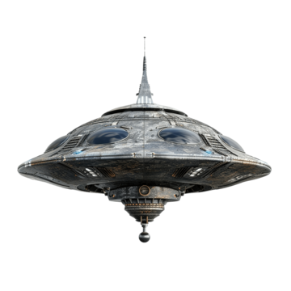

This assignment was a very difficult new code for me to write. I made a game that has a space ship flying through space and avoiding black rectangular obstacles
I added a royalty free song in the background. (Local Forecast - Elevator By Kevin MacLeod) https://www.youtube.com/watch?v=FgXYzF5-Yiw
An issue I ran into while coding this was with finding out how to add the score. The score kept not appearing on the canvas despite even asking ChatGPT for help. As such I changed it so that the score appears on the screen below the game canvas.